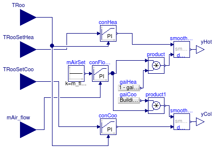
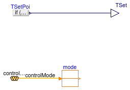
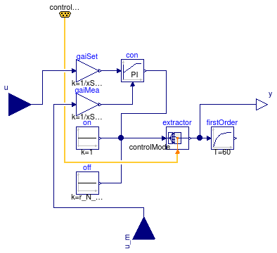

Package with controller models
Information
Extends from Modelica.Icons.VariantsPackage (Icon for package containing variants).
Package Content
Controller for room mixing box

Information
This controller outputs the control signal for the air damper for the hot deck and the cold deck.
The control signal for the hot deck is the larger of the two signals needed to track the room heating
temperature setpoint, and the minimum air flow rate.
Extends from Modelica.Blocks.Interfaces.BlockIcon (Basic graphical layout of input/output block).
Parameters
| Type | Name | Default | Description |
|---|
| MassFlowRate | m_flow_min | | Minimum mass flow rate [kg/s] |
Connectors
| Type | Name | Description |
|---|
| input RealInput | TRoo | Measured room temperature [K] |
| output RealOutput | yHot | Signal for hot air damper |
| output RealOutput | yCol | Signal for cold deck air damper |
| input RealInput | mAir_flow | Measured air mass flow rate into the room |
| input RealInput | TRooSetHea | Room temperature setpoint for heating [K] |
| input RealInput | TRooSetCoo | Room temperature setpoint for cooling [K] |
Modelica definition
block RoomMixingBox "Controller for room mixing box"
extends Modelica.Blocks.Interfaces.BlockIcon;
parameter Modelica.SIunits.MassFlowRate m_flow_min "Minimum mass flow rate";
Buildings.Controls.Continuous.LimPID conHea(
yMax=1,
xi_start=0.1,
initType=Modelica.Blocks.Types.InitPID.InitialState,
Td=60,
yMin=0,
controllerType=Modelica.Blocks.Types.SimpleController.PI,
k=0.1,
Ti=120) "Controller for heating";
Buildings.Controls.Continuous.LimPID conCoo(
yMax=1,
reverseAction=true,
Td=60,
controllerType=Modelica.Blocks.Types.SimpleController.PI,
k=0.1,
Ti=120) "Controller for cooling (acts on damper)";
Modelica.Blocks.Interfaces.RealInput TRoo(final quantity="ThermodynamicTemperature",
final unit = "K", displayUnit = "degC", min=0)
"Measured room temperature";
Modelica.Blocks.Interfaces.RealOutput yHot "Signal for hot air damper";
Modelica.Blocks.Interfaces.RealOutput yCol "Signal for cold deck air damper";
Modelica.Blocks.Interfaces.RealInput mAir_flow
"Measured air mass flow rate into the room";
Buildings.Controls.Continuous.LimPID conFloRat(
yMax=1,
xi_start=0.1,
Td=60,
yMin=0,
controllerType=Modelica.Blocks.Types.SimpleController.PI,
k=0.1,
Ti=120) "Controller for mass flow rate";
Modelica.Blocks.Sources.Constant mAirSet(k=m_flow_min)
"Set point for minimum air flow rate";
Buildings.Utilities.Math.SmoothMax smoothMaxHea(deltaX=0.01)
"Adds control signal for minimum flow rate of zone";
Modelica.Blocks.Interfaces.RealInput TRooSetHea(unit="K")
"Room temperature setpoint for heating";
Modelica.Blocks.Interfaces.RealInput TRooSetCoo(unit="K")
"Room temperature setpoint for cooling";
Modelica.Blocks.Sources.RealExpression gaiCoo(y=
Buildings.Utilities.Math.Functions.smoothLimit(
(TRoo - TRooSetHea)/(TRooSetCoo - TRooSetHea),
0,
1,
0.01)) "Gain for adding minimum flow rate to cooling signal";
Modelica.Blocks.Sources.RealExpression gaiHea(y=1 - gaiCoo.y)
"Gain for adding minimum flow rate to cooling signal";
Modelica.Blocks.Math.Product product;
Modelica.Blocks.Math.Product product1;
Buildings.Utilities.Math.SmoothMax smoothMaxCoo(deltaX=0.01)
"Adds control signal for minimum flow rate of zone";
equation
connect(mAir_flow, conFloRat.u_m);
connect(conHea.y, smoothMaxHea.u1);
connect(conHea.u_s, TRooSetHea);
connect(conCoo.u_s, TRooSetCoo);
connect(TRoo, conCoo.u_m);
connect(TRoo, conHea.u_m);
connect(conFloRat.y, product.u1);
connect(product.y, smoothMaxHea.u2);
connect(product.u2, gaiHea.y);
connect(gaiCoo.y, product1.u1);
connect(conFloRat.y, product1.u2);
connect(smoothMaxHea.y, yHot);
connect(product1.y, smoothMaxCoo.u1);
connect(conCoo.y, smoothMaxCoo.u2);
connect(smoothMaxCoo.y, yCol);
connect(mAirSet.y, conFloRat.u_s);
end RoomMixingBox;
Set point scheduler for cooling coil

Information
Extends from Modelica.Blocks.Interfaces.BlockIcon (Basic graphical layout of input/output block).
Parameters
Connectors
Modelica definition
block CoolingCoilTemperatureSetpoint
"Set point scheduler for cooling coil"
extends Modelica.Blocks.Interfaces.BlockIcon;
import Buildings.Examples.VAVReheat.Controls.OperationModes;
parameter Modelica.SIunits.Temperature TOn "Setpoint during on";
parameter Modelica.SIunits.Temperature TOff "Setpoint during off";
Modelica.Blocks.Sources.RealExpression TSetPoi(y=if (mode.y ==
OperationModes.occupied or mode.y == OperationModes.unoccupiedPreCool
or mode.y == OperationModes.safety) then TOn else TOff)
"Air temperature setpoint";
VAVReheat.Controls.ControlBus controlBus;
Modelica.Blocks.Routing.IntegerPassThrough mode;
Modelica.Blocks.Interfaces.RealOutput TSet "Temperature set point";
equation
connect(controlBus.controlMode, mode.u);
connect(TSetPoi.y, TSet);
end CoolingCoilTemperatureSetpoint;
Set point scheduler for heating coil
Information
Extends from CoolingCoilTemperatureSetpoint (Set point scheduler for cooling coil).
Parameters
Connectors
Modelica definition
block HeatingCoilTemperatureSetpoint
"Set point scheduler for heating coil"
import Buildings.Examples.VAVReheat.Controls.OperationModes;
extends CoolingCoilTemperatureSetpoint(TSetPoi(y=if (mode.y ==
OperationModes.unoccupiedOff) then TOff else TOn));
end HeatingCoilTemperatureSetpoint;
Controller for fan revolution

Information
Extends from Modelica.Blocks.Interfaces.SISO (Single Input Single Output continuous control block).
Parameters
| Type | Name | Default | Description |
|---|
| Real | xSet_nominal | | Nominal setpoint (used for normalization) |
| Real | r_N_min | 0.01 | Minimum normalized fan speed |
Connectors
| Type | Name | Description |
|---|
| input RealInput | u | Connector of Real input signal |
| output RealOutput | y | Connector of Real output signal |
| ControlBus | controlBus | |
| input RealInput | u_m | Connector of measurement input signal |
Modelica definition
block FanVFD "Controller for fan revolution"
extends Modelica.Blocks.Interfaces.SISO;
import Buildings.Examples.VAVReheat.Controls.OperationModes;
Buildings.Controls.Continuous.LimPID con(
yMax=1,
yMin=0,
controllerType=Modelica.Blocks.Types.SimpleController.PI,
Td=60,
Ti=10) "Controller";
Modelica.Blocks.Math.Gain gaiMea(k=1/xSet_nominal)
"Gain to normalize measurement signal";
parameter Real xSet_nominal "Nominal setpoint (used for normalization)";
VAVReheat.Controls.ControlBus controlBus;
Modelica.Blocks.Routing.Extractor extractor(nin=6);
Modelica.Blocks.Sources.Constant off(k=r_N_min) "Off signal";
Modelica.Blocks.Sources.Constant on(k=1) "On signal";
Modelica.Blocks.Math.Gain gaiSet(k=1/xSet_nominal)
"Gain to normalize setpoint signal";
Modelica.Blocks.Interfaces.RealInput u_m
"Connector of measurement input signal";
parameter Real r_N_min=0.01 "Minimum normalized fan speed";
Modelica.Blocks.Continuous.FirstOrder firstOrder(
initType=Modelica.Blocks.Types.Init.InitialState,
y_start=r_N_min,
T=60);
equation
connect(gaiMea.y, con.u_m);
connect(con.y, extractor.u[OperationModes.occupied]);
connect(con.y, extractor.u[OperationModes.unoccupiedWarmUp]);
connect(con.y, extractor.u[OperationModes.unoccupiedPreCool]);
connect(off.y, extractor.u[OperationModes.unoccupiedOff]);
connect(off.y, extractor.u[OperationModes.safety]);
connect(on.y, extractor.u[OperationModes.unoccupiedNightSetBack]);
connect(controlBus.controlMode, extractor.index);
connect(gaiSet.y, con.u_s);
connect(u_m, gaiMea.u);
connect(gaiSet.u, u);
connect(extractor.y, firstOrder.u);
connect(y, extractor.y);
end FanVFD;
Automatically generated Thu Apr 4 12:01:45 2013.